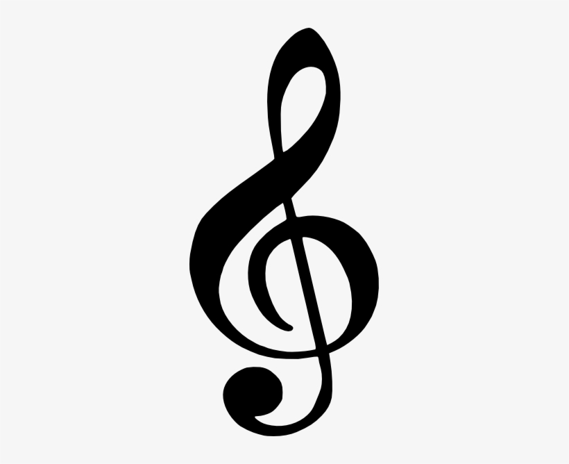

Notes
In music, a Note could be an image signifying a musical sound. In English utilization, a note is additionally the sound itself. Notes can speak to the pitch and length of a sound in melodic documentation. A note can moreover speak to a pitch class. Notes are the building squares of much composed music which is a process of melodic wonders that encourage execution, comprehension, and investigation.
Types of Notes
A clef from French which means key may be a melodic image utilized to show which notes are spoken to by the lines and spaces on a melodic fight. When a clef is put on a fight it relegates a specific note to one of the five lines. This line gets to be a reference point by which the names of the other notes on the fight are determined. The three clef images utilized in advanced music documentation are the G-clef, F-clef, and C-clef. Putting these clefs on a line fixes a reference note to line an F-clef fixes the F underneath center C, a C-clef fixes center C, and a G-clef fixes the G over center C.
In advanced music documentation, the G-clef is most often seen as treble clef, and the F-clef as bass clef. The C-clef is generally experienced as alto clef (putting center C on the third line) or tenor clef. A clef may be set on a space rather than a line, but this can be uncommon.
Quarter note or crotchet is a note played for one quarter of the length of the entirety note. Frequently, performers will say that a crotchet is one beat, but this is often not continuously redressed, as the beat is demonstrated by the time signature of the music. A quarter note may or may not be the beat. Quarter notes are notated with a filled-in oval note head and a straight, flagless stem. The stem more often than not focuses upwards in the event that it is underneath the centerline of the fight or downwards in the event that it is on or over the centerline. The stem heading may separate more than one portion. The head of the note moreover switches its introduction in connection to the stem. A related value is the quarter rest. It denotes a silence of the same duration as a quarter note. It typically appears as the symbol, or occasionally, as the older symbol.
The note is determined from the semi minima or half minim of mensural documentation. The word crotchet comes from Ancient French stitch, meaning little hook, little croc, hook, since of the snare utilized on the note in dark documentation. Since the snare showed up on the eighth note within the afterward white documentation, the advanced French term croche alludes to an eighth note.
Next Page arrow_forward
{kind=link}
{kind=link}